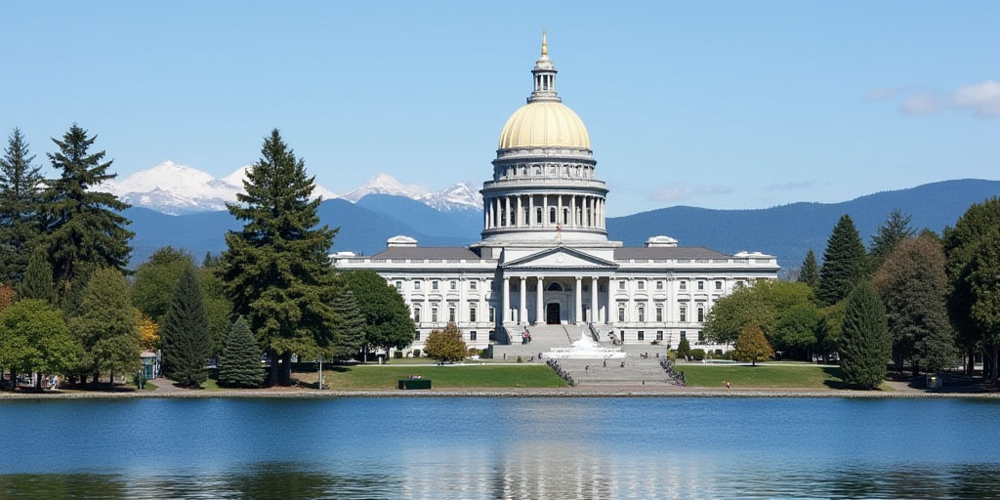
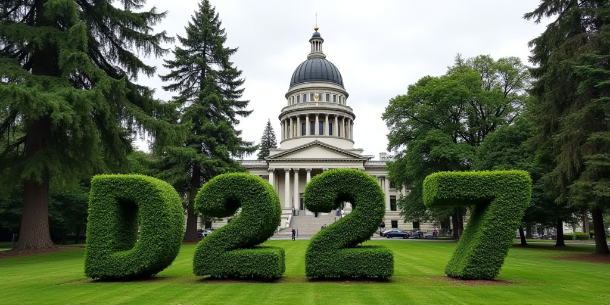

Olympia - WA State Capital
Olympia is Washington State's capital city, a place that holds both history and the central heart of the state's government and political powers. Centered in the Pacific Northwest, it’s a city where the natural beauty of the region meets the energy of political action.
Known for its political atmosphere, Olympia blends small-town charm with the importance of being the state capital. A city where any American can find themself surrounded by a sense of pride, purpose, and freedom.
Parks, waterfront views, and government buildings, Olympia is a city that reflects the spirit of Washington State. Whether you’re here to explore, work, take up a seat in office, or just pass through, Olympia offers a little something for everyone.
Exploring Olympia
Olympia isn’t just the state capital and a political powerhouse, it’s an experience. From its waterfront views to its lively local political debates, there’s always something to enjoy. Those lucky enough find themself walking through beautiful parks, stumbling into unique shops, and enjoying the city.
Whether you’re visiting on your own, with family and friends, or here for business, the city has a way of making everyone feel special.